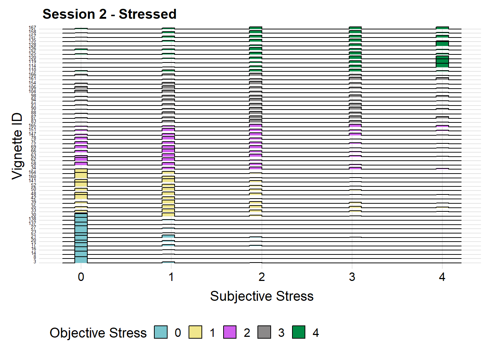
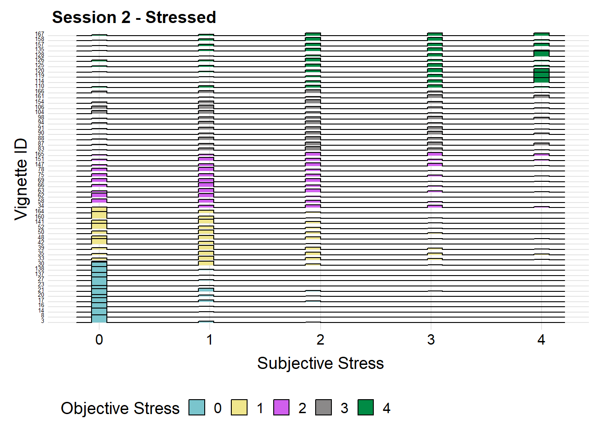

Chapter 5 Results
5.1 Examination of Subjective Relative to Objective Stress
One major question of interest in this study was whether participant’s self-reports of how stressed they would be in each scenario corresponds with objective coder ratings of the severity of those scenarios, as coded by the Daily Inventory of Stressful Events (DISE) scheme (Midus, 1994). A priori, we expected that participant ratings of the stressfulness of the events would correspond with the objective coders’ ratings of the severity of the events. Both the subjective responses and the objective codes ranged from 0=not at all to 4=extremely.
We were also interested in investing whether variance in subjective reports depended on the objective codes; for example, whether scenarios in the 2-3 range in objective severity were more variable while those in the high and low ranges of severity exhibited less variability. To explore these ideas, we build six histogram-style ridge plots, three for each session (session 1 or session 2 of the study) and one for each measure of stress (how ‘stressed’ did you feel? how ‘overwhelmed’ did you feel?) plus an aggregate score that is the mean of how ‘stressed’ and ‘overwhelmed’ participants felt they would be.
In the plots below, the x-axis is subjective ratings of stressed, overwhelmed, and the aggregate and the y-axis is the ID number for the vignettes. The y-axis is ordered such that vignettes at the top are the most objectively severe scenarios (4=extremely stressful) and decrease down the axis to the bottom, which contains vignettes rated as least objectively severe (0=not at all stressful). The objective severity of the scenarios is also color-coded, as depicted in a legend to the right of the plots.
Note that we also ensured that our visualization would allow individuals with protanomaly, deuteranomaly, tritanomaly, protanopia, deuteranopia, tritanopia, and blue cone monochromacy to effectively read the graph. We confirmed that the visual is accessible to these individuals by plugging our images into https://www.color-blindness.com/coblis-color-blindness-simulator/ and looking at it in all color blind modes. Although the color palette is not the prettiest, it is one that is accessible to all types of color blindness other than monochromacy because there is no way to use a colored visualization that will work for individuals with that kind of color blindness. In sum, we developed our own color palette that is as inclusive as possible.
 

We have several key takeaways from these visualizations. All discussion refers to all three ways of operationalizing stress: how ‘stressed’, how ‘overwhelmed’, and the aggregate of how ‘stressed’ and ‘overwhelmed’ reported by the participants.
First, we see that participants generally report that they would be less stressed than expected by the objective coding scheme; many participants rate scenarios that are objectively a ‘1’ as a ‘0’, those that are objectively a ‘2’ as a ‘1’, and so on. However, the under-reporting is most severe for the low-range objective stressors (the 1’s and 2’s). At the same time, we do see the expected general increase in mean subjective ratings of stress across the objective range, with more objectively severe stressors being rated as more subjectively stressors.
Next, we observe less variability in the high and low ranges of the scale, particularly in the ‘0’ range. This implies that participants generally perceive very non-severe and very severe stressors as consensually stressful (i.e. little disagreement about the stressfulness of these scenarios), while subjective interpretation and therefore variability emerges in the ‘2’ and ‘3’ range of the objective scale. We think this visualization does a nice job of laying out the correspondence between objetive coding of the stressors and subjective interpretations of them.
5.2 Subjective Stress for Different Life Domains
Another primary question was whether different life domains elicit relatively more or less stress. As coded by the two objective DISE coders, there were seven life domains: Discrimination events, Financial events, Interpersonal Tesnsion events, Work/Education events, Health/Accident Events, and Miscellaneous events. We chose to make a mosaic plot so that we could see the propotion of events in each domain as well as the relative amount of stress in each domain.
Once again, we ensured that these visualizations were color-blind accessible. However, this time we simply used different shades of green and plugged the mosaic into the color blind website sited above and ensured that individuals with all types of color blindness could read them.
The mosaic plot reveals several interesting trends. First, we see that there were relatively more work/education types of vignettes than the others. The least common type of vignette were the health/accident event. More interestingly, we can see that interpersonal tensions were the least stressful of all life domains, which is suprising given that prior work in this area has found interpersonal tensions to be the most, rather than least, stressful. We also see that financial events were deemed the most stressful. This may reflect the fact that the study was conducted during the COVID-19 pandemic, when financial sensitivity was high. It might also reflect the fact that most Columbia undergraduates are either relatively wealthy or relatively unwealthy (i.e. on scholarships) relative to the general population. These two types of financial circumstances might make financial stressors particularly problematic, as wealthy students would be concerned about their life changing to due to financial stressors (i.e one vignette descibes a call from a parent in which most family money as been lost) and unwealthy students might be particularly sensitive to dealing with financial hardships. It is also interesting to see that the discrimination scenarios were relativly well distributed. It might be that students who have experienced these types of events consider them to more or less stressful relative to students who have never experienced these types of events. With no a priori hypothesis, this is something that will be investigated in the formal analysis of this data.
5.3 Subjective Stress and Individual Difference Factors
Next, we investigate how people’s baseline condition may impact their reactions to stressors. Data was collected on sex assignment, household income, loneliness, and relationship with a people’s close ones. Our goal was to use parallel coordinate plots to investigate clustering patterns for each individual difference factor. Sex assignment is simply clustered as “Male” and “Female”. The other three factors are separated in 3 levels. In these graphs, the parallel axes are ordered from objectively most severe to objectively least severe (i.e. those events rated as most stressful by the DISE coders are on the left, descending to the least stressful rated by objective coders on the right). For subjective stress, we averaged the scores from self reported ‘stressed’ and self reported ‘overwhelmed’. Once again, we used color-blind appropriate colors using the color palette we designed ourselves.
One main takeaway from these visualizations is that vignettes objectively coded as more stressful (those on the left) incited higher subjective stress reactions than those objectively coded as less stressful (those on the right) We found less interesting trends along individual difference factors than expected. The only noticable clustering pattern we see is the one with sex assignment. It shows that males are more likely to state that they are less responsive than women in those vignettes with higher objective stress. And overall, females present more subjective stress than males. Other three fatcors present no evident impact on people’s subjective ratings. This is interesting in it’s own right, as psychological theory would predict that lower income people are consistently more reactive, that lonely people would be consistently more reactive, and that those with more close relationships would be less reactive.
5.4 Subjective Stress in the 1st Versus 2nd Session and the Relation Between Number of Siblings and Subjective Stress
An old area of psychological research associates birth order with stress reactivity. Although not an active area of research before, early findings suggested that those with more siblings should be generally less stress reactive than those with few siblings. To reinvigorate these areas of study, we investigated how the number of siblings may affect students’ stress levels in different life domains Since we have less than five percent of people with 4 or more siblings, we decided to conclude the data based on four categories, each with “0”, “1”,“2”,“3+” siblings. Finally, these are confimed to be color-blind accessible using our self-generated palette.
Based on this graph, we could a few really interesting foundings:
Overall, we could observe a slight drop of stress level from Session 1 to Session 2, which may be caused by the time periods when the surveys were conducted. We also see an overall trend, where there is an increase of subjective stress when the the number of siblings increases from “1” to “2”, and then an relatively bigger decline of subjective stress for students with 3+ siblings, especially on categories such that Discrimination and Interpersonal Tension. We suspect the reason behind this trend may be that students with more siblings receive less expectations from their parents, and they receive more love , support and care from all of their family members, where do not need to worry about finding new friends and they are more comfortable with themselves and less conscious of their beings.
For scenarios with Discrimination problems, when number of siblings increase to 3 and more, we can see an apparent tendency that people start to feel less stress. We suspect that it may cause by the shared consciousness and understanding we own with more siblings.
For scenarios with Interpersonal Tension problem, we can see an extreme decline in the level of subjective stress when the number of siblings is more than 3. We suspect that this is due to the fact that students with more siblings may know better on how to communicate and negotiate with their friends since they have had their “practice” with their siblings, so they feel less stressed about it.
For scenarios with Finances problems, we thought there will be large increase of stress level for people have more siblings due to more family burden. However, there is actually a drop of stress level, especially for session 2.
For scenarios with Health/Accident problems, we can see a clear decrease of stress level for both sessions when people have more siblings. We suspect that maybe this is because when you have more siblings, there will be more people care about your health problems and help you overcome any accidents, thus making people feel less stress.
5.5 Potential Vignettes Outliers
We were also interested in visualizing the distribution of responses to the two questions asked for each scenario: ‘have you experienced something like this before?’ (1=yes) and ‘was it easy to imagine yourself in this scenario?’ (1=yes). We therefore calculated the proportion of participants who responded yes to each question and visualized a box and whisker plot of those proportions. We chose box and whisker plots because we are interested in finding outliers; in the next iteration of the study we will likely exclude scenarios that were extreme in terms of describing events that the sample hadn’t experienced and being difficult to imagine oneself in the scenario.
These visualizations reveal several important things about the study. First, participants generally indicated that it was easy to imagine themselves in the scenarios (means for both session were above 90%), even though they hadn’t necessarily been in situations exactly like them before (means for both sessions around 45%-50%). However, there were a few scenarios that participants found difficult to imagine: scenarios 165 and 48. In the next iteration of the study, we will likely remove these scenarios and replace them with situations that are more commonly experienced by undergraduate students.